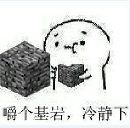

2023年9月17日整理：
原来阉割是这个意思？
网易阉割掉了MC许多内容...
你的卡疤在哪只胳膊上？
你和我都是少数的，脱离了主要人流（你是滨海实验小学→XJY/NEWS(New Epoch Weifang School)，我是滨海实验小学→滨海三中→XJY/NEWS，都是极少数），为什么呢...
生物书上出现奇怪的东西了
“你要再长一些，与伙伴保持一致，可不能闹分裂啊”
那要是情况刚好相反呢？
"我和你差不多，但正好相反"矛盾吗？有时并不矛盾，比如：
- LZX: "我左手底力>14，右手底力<12"
- "我和你差不多，但正好相反"
其实我好害怕你qs，还有一年你们又要JunXion（双关语）了，而且持续两个星期…
人生就像打电话，不是你先挂，就是我先挂
你还能活多久呢qwq，你能活得
生活中的危险还有很多，淹不死别人的水可能会淹得死你...你可千万不要qs
你qs了我会悲痛一被子（双关语）的
不要，不要qs...
（我是真心诚意的♥）
（你看起来太容易qs了qwq...）
（而且最近日本在排放核污水，我真的好担心啊）
（即使你qs了，你依旧是我夜空中最闪亮的那颗星⭐）
$$ \small这是天上的太阳\qquad\qquad\qquad\\ \large \begin{array}{ccc} &\downarrow&\\ 王&昊&亮\leftarrow\small这是月亮\\ &\uparrow& \end{array}\\ \small这是天空\qquad\qquad\qquad $$
众所周知，有很多人在参加ccf举办的比赛的时候写暴戾语言被禁赛的，但有这样一个故事：一个人在参赛的时候用电脑自带的录音机录了一段暴戾语言，编码进了代码里提交了，运行代码的时候会播放这段音频，然后因为有20个测试点，所以评测的时候音频播放了20次...
还有一个是在代码里写while (true)调用beep函数播放Funny Town的，但由于1s的时限只播放了前四个音，程序就被kill掉了，但这四个音同样重复了20遍（据说虽然只有这四个音但评测员居然听出来了）
（以上内容纯属娱乐，请勿轻易尝试）
论fu(k,y0u,c(f))算暴力语言吗？（fu是findU的缩写，y0u是u的第1个y坐标，c是check缩写）
颜回，是孔子弟子中学问最好的，但却是身体最差的
虽然长得ai的身体不一定差，但却是让我想到：“学习最好的，但却是长得最ai的”
hello\rworld: |
hello\nworld: |
hello\r\nworld: |
|
hello
world
|
hello
world
|
hello
world
|
| 只回车不换行 | 只换行不回车 | 回车并换行 |
注：千万别在[线传打字机]上尝试vim！
正在启动萌象... 呆萌之象在 233 ms 内启动
"你要再长一些，与伙伴保持一致，可不能闹分裂啊"
那要是情况刚好相反呢
要是长的ai一点就好了：
上午有的时候老师叫了几个同学上黑板做题，其实是直接在题目的下面做，然后我上去了，我做题的时候，同学们让我往下一点，因为我挡住他们的题目了
低头才不容易撞人啊/长得ai的不低头也不容易撞人但容易被人撞(((
（但相对于不被别人撞来说，我更愿意不撞别人，即使更容易被别人撞）
英语阅读理解：“children under 1.5 meters tall can enjoy a 25% discount on the ticket price”
我：（我必须嚼颗基岩冷静一下）